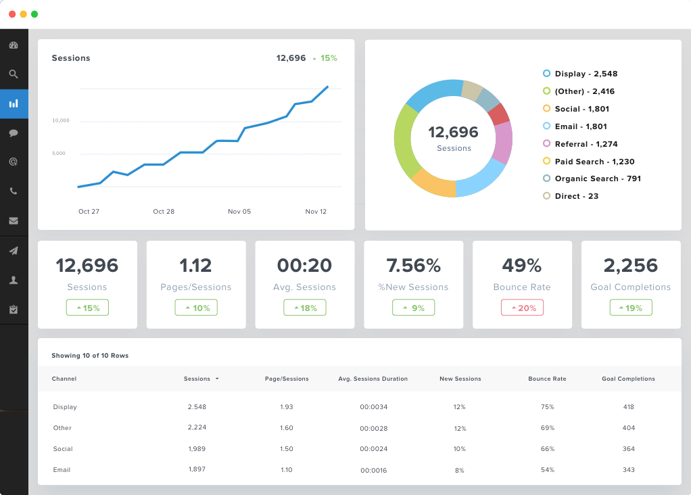

Google Analytics es una herramienta de análisis web que pone a nuestra disposición Google de forma totalmente gratuita. Es la herramienta de analítica web por excelencia. Nos facilita datos e informes sobre todo lo que pasa en nuestra página web: visitantes, usuarios únicos, conversiones, duración de las visitas, duración de las sesiones, cómo han llegado a nuestra web.
Google Analytics es la herramienta de analítica web por excelencia ¡y es gratuita!
Pero, algunos pensaréis, ¿para qué sirve Google analytics en mi estrategia y mi negocio? En principio, esto no son nada más que datos y más datos en los que te puedes perder, y que no sirven para nada si no hacemos un análisis riguroso de ellos y los interpretamos correctamente. Para poder descifrarlos y entenderlos tendremos que aprender un poco más sobre analytics, sus funciones, trucos y dónde encontrar los datos interesantes.

Pero una vez sepamos cómo manejar esta herramienta podremos:
Conocer mejor a nuestros usuarios:
- Saber lo que les gusta y lo que no.
- Su procedencia geográfica
- Dispositivo utilizado: Smartphone, Tablet u Ordenador
- Cómo nos encontraron en la red.
- Por dónde se van de nuestra web.
- Que les gusta y que no de lo que ofrecemos.
- Hacer un seguimiento de nuestra estrategia seo y estrategia sem, con lo que podremos medir el éxito de nuestras campañas de marketing digital. Si conocemos el comportamiento de nuestros visitantes y sabemos por dónde se mueven en nuestro sitio web, podremos conocer si nuestras estrategias online están funcionando correctamente o debemos modificarlas para tener más éxito.
Tomar decisiones estratégicas para nuestro negocio teniendo en cuenta estos datos nos ayudará a corregir malas decisiones pasadas.
Crear informes personalizados teniendo en cuenta nuestros intereses y así podremos hacer un seguimiento de nuestro objetivos o KPIs reflejará si vamos por el buen camino en nuestra estrategia online.
Hacer un seguimiento exhaustivo del buen funcionamiento de nuestro sitio web y todas sus páginas, es decir, hacer una analítica completa de la web, para conocer si los usuarios entienden las rutas que se han creado para hacerles más sencilla la visita, si la página se carga correctamente o tarda una infinidad en proporcionar imagenes, etc.
En un mundo tan cambiante como es el de Internet y el marketing digital es fundamental saber para qué sirve Google analytics para el seguimiento diario de nuestras campañas y nuestra web, y conocer qué está pasando, cómo están actuando mis clientes en la red o si estamos llegando a los objetivos marcados y si no es así optimizar en consecuencia. Para hacer este seguimiento no hay mejor aliada que esta herramientas, con la que creo que ya te has convencido de para qué sirve Google analytics.